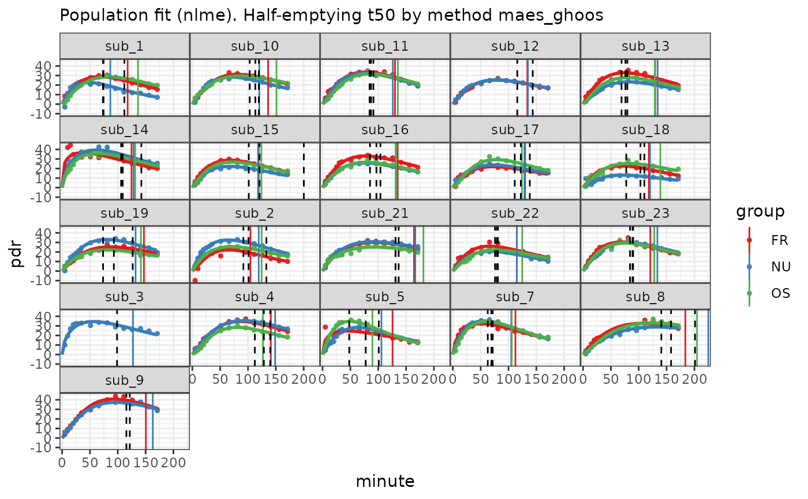

13C time series PDR data from normals and three different meals in a cross-over design from the division of Gastroenterology and Hepatology, University Hospital Zurich. See Kuyumcu et al., Gastric secretion does not affect....
Data are formatted as described in usz_13c. In addition, half
emptying times from MRI measurements are attached to the data as attribute
mri_t50. The example below shows how to analyze the data and present half
emptying times from MRI and 13C in diagrams.
Usage
data(usz_13c_d)Examples
# \donttest{
library(dplyr)
library(ggplot2)
data(usz_13c_d)
mri_t50 = attr(usz_13c_d, "mri_t50")
d = usz_13c_d %>%
cleanup_data() %>% # recommended to test for validity
nlme_fit()
plot(d) +
geom_vline(data = mri_t50, aes(xintercept = t50), linetype = 2)

# Maes-Ghoos t50
dd = mri_t50 %>%
inner_join(
coef(d) %>% filter(parameter=="t50", method == "maes_ghoos"),
by = c("patient_id", "group")) %>%
mutate(
t50_maes_ghoos = value
)
ggplot(dd, aes(x=t50, y = t50_maes_ghoos, color = group)) +
geom_point() +
facet_wrap(~group) +
geom_abline(slope = 1, intercept = 0) +
xlim(45,205) +
ylim(45,205)
#> Warning: Removed 1 row containing missing values or values outside the scale range
#> (`geom_point()`).
# Bluck-Coward t50
dd = mri_t50 %>%
inner_join(
coef(d) %>% filter(parameter=="t50", method == "bluck_coward"),
by = c("patient_id", "group")) %>%
mutate(
t50_bluck_coward = value
)
ggplot(dd, aes(x=t50, y = t50_bluck_coward, color = group)) +
geom_point() +
facet_wrap(~group) +
geom_abline(slope = 1, intercept = 0) +
xlim(0,205) +
ylim(0,205)
# }